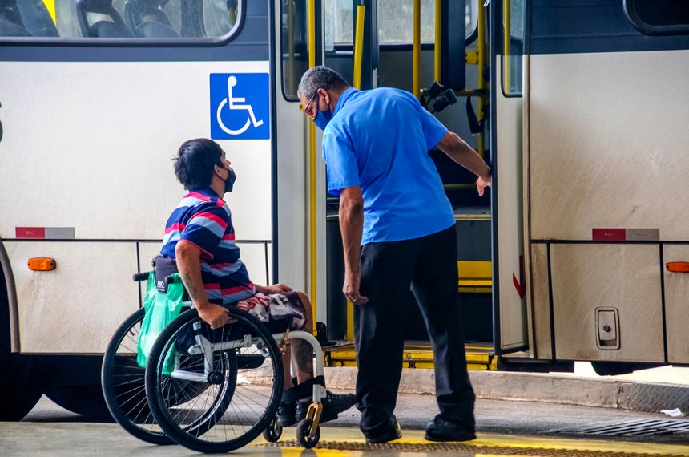

A acessibilidade vai além da instalação de rampas ou banheiros adaptados; trata-se de criar um ambiente onde todas as pessoas, independentemente de suas limitações físicas, sensoriais, intelectuais ou emocionais, possam participar plenamente da vida em sociedade. A inclusão deve ser um esforço contínuo para eliminar barreiras e promover igualdade. 
O Conceito de Acessibilidade
Acessibilidade significa garantir que produtos, serviços, informações e ambientes sejam utilizáveis por todos. Isso inclui desde a adaptação de espaços físicos, como elevadores e rampas, até o design de experiências digitais acessíveis, como sites compatíveis com leitores de tela. Além disso, envolve atitudes e políticas que respeitem e promovam a diversidade.
Acessibilidade no Espaço Urbano
-
Mobilidade física
Calçadas niveladas, faixas de pedestres sinalizadas e transporte público acessível são essenciais para que pessoas com deficiência ou mobilidade reduzida se desloquem com independência.
-
Orientação sensorial
Sinalização em braille, pisos táteis e dispositivos de áudio em semáforos são exemplos de como facilitar a navegação de pessoas com deficiência visual.
-
Espaços públicos
Parques, teatros e centros culturais devem oferecer assentos reservados, entradas acessíveis e alternativas para interação inclusiva.
Acessibilidade Digital
-
Sites e aplicativos acessíveis
Design responsivo, contraste adequado, texto alternativo para imagens e compatibilidade com tecnologias assistivas são práticas indispensáveis.
-
Educação digital
Plataformas de ensino devem oferecer recursos como legendas, transcrições de áudio e materiais adaptados para diferentes necessidades.
Acessibilidade na Educação
-
Materiais adaptados
Adequar materiais didáticos e avaliações às capacidades de cada aluno.
-
Capacitação de professores
Capacitar professores para lidar com diferentes tipos de deficiência.
-
Infraestrutura inclusiva
Garantir infraestrutura física e tecnológica que promova a participação de todos.
Acessibilidade no Trabalho
-
Adaptação de espaços
Adaptação de espaços e equipamentos.
-
Políticas inclusivas
Políticas de inclusão e igualdade de oportunidades.
-
Capacitação de equipes
Programas de capacitação para sensibilizar equipes sobre diversidade.
Benefícios de um Mundo Acessível
Quando investimos em acessibilidade, criamos um mundo que beneficia a todos. Espaços mais fáceis de navegar, recursos tecnológicos mais intuitivos e políticas inclusivas tornam a sociedade mais justa, humana e produtiva.
Conclusão
A acessibilidade na vida cotidiana não é um luxo, mas um direito. Ela exige mudanças físicas, tecnológicas e culturais que promovam a inclusão e o respeito às diferenças. Cabe a todos, como sociedade, garantir que essas transformações aconteçam, construindo um mundo mais equitativo para o presente e para o futuro.